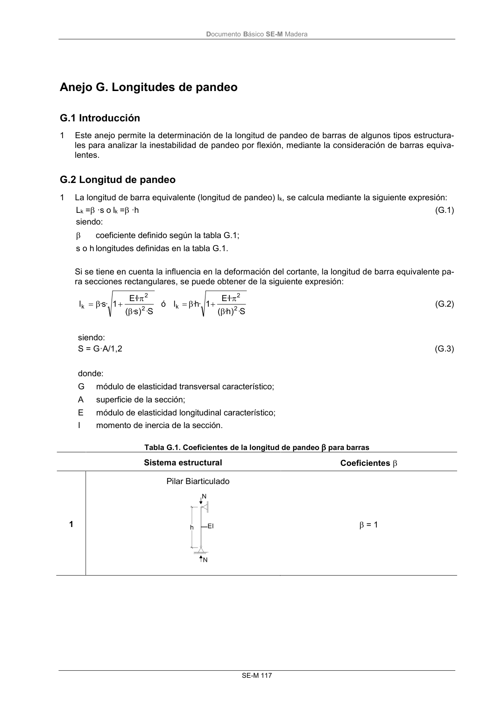
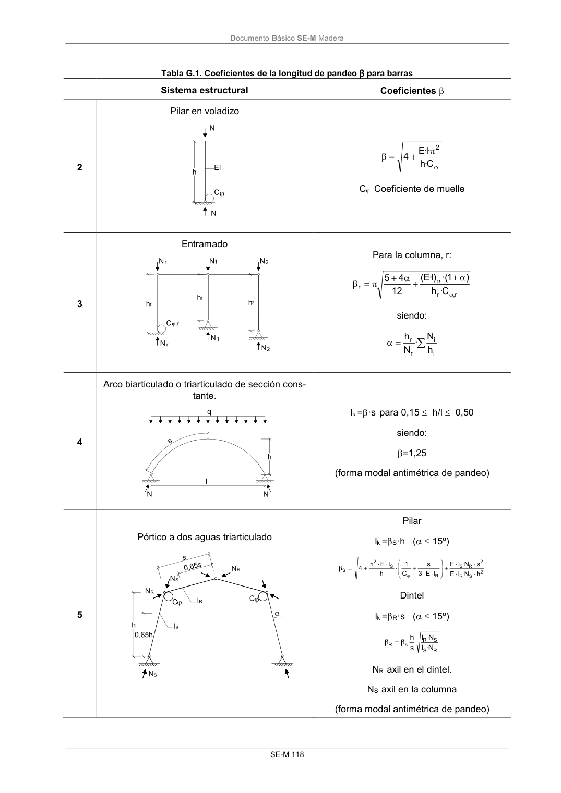
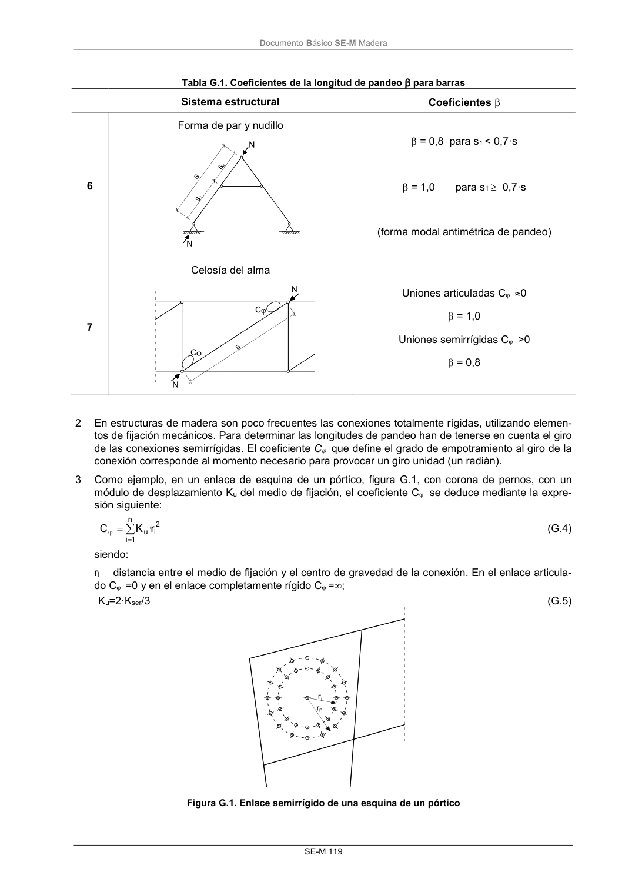

DB-SE-M · G.2 Longitud de pandeo · versión 2019-12-20 · capa oficial
Formatos: JSON compacto · Markdown · PDF fuente
Ámbito del documento · texto del ámbito · documento y tablas
ID técnico a0214 · PDF pág. 123-127 · jerarquía no validada por persona · contrastado con el literal de la página 123 (candidato tipográfico); no validado por persona · padre: raíz
G.2 Longitud de pandeo 1 La longitud de barra equivalente (longitud de pandeo) lk, se calcula mediante la siguiente expresión: Lk = ·s o lk = ·h (G.1) siendo: coeficiente definido según la tabla G.1; s o h longitudes definidas en la tabla G.1. Si se tiene en cuenta la influencia en la deformación del cortante, la longitud de barra equivalente pa- ra secciones rectangulares, se puede obtener de la siguiente expresión: S · ) s· ( ·I· E 1 ·s· l 2 2 k ó S · ) h· ( ·I· E 1 · h· l 2 2 k (G.2) siendo: S = G·A/1,2 (G.3) donde: G módulo de elasticidad transversal característico; A superficie de la sección; E módulo de elasticidad longitudinal característico; I momento de inercia de la sección. Tabla G.1. Coeficientes de la longitud de pandeo para barras Sistema estructural Coeficientes 1 Pilar Biarticulado = 1 DocumentoBásico SE-M Madera SE-M 118 Tabla G.1. Coeficientes de la longitud de pandeo para barras Sistema estructural Coeficientes 2 Pilar en voladizo C · h ·I· E 4 2 C Coeficiente de muelle 3 Entramado Para la columna, r: r, r r C · h ) 1 ·( )I· E ( 12 4 5 siendo: i i r r h N · N h 4 Arco biarticulado o triarticulado de sección cons- tante. lk =·s para 0,15 h/l 0,50 siendo: =1,25 (forma modal antimétrica de pandeo) 5 Pórtico a dos aguas triarticulado Pilar lk =S·h ( 15º) 2 S R 2 R S R S 2 S h N · I E s N · I E I E 3 s C 1 h I E 4 Dintel lk =R·s ( 15º) R S S R s R N · I N · I s h NR axil en el dintel. NS axil en la columna (forma modal antimétrica de pandeo) DocumentoBásico SE-M Madera SE-M 119 Tabla G.1. Coeficientes de la longitud de pandeo para barras Sistema estructural Coeficientes 6 Forma de par y nudillo = 0,8 para s1 < 0,7·s = 1,0 para s1 0,7·s (forma modal antimétrica de pandeo) 7 Celosía del alma Uniones articuladas C0 = 1,0 Uniones semirrígidas C >0 = 0,8 2 En estructuras de madera son poco frecuentes las conexiones totalmente rígidas, utilizando elemen- tos de fijación mecánicos. Para determinar las longitudes de pandeo han de tenerse en cuenta el giro de las conexiones semirrígidas. El coeficiente C que define el grado de empotramiento al giro de la conexión corresponde al momento necesario para provocar un giro unidad (un radián). 3 Como ejemplo, en un enlace de esquina de un pórtico, figura G.1, con corona de pernos, con un módulo de desplazamiento Ku del medio de fijación, el coeficiente C se deduce mediante la expre- sión siguiente: 2 i n 1 i ur· K C (G.4) siendo: ri distancia entre el medio de fijación y el centro de gravedad de la conexión. En el enlace articula- do C =0 y en el enlace completamente rígido C=; Ku=2·Kser/3 (G.5) Figura G.1. Enlace semirrígido de una esquina de un pórtico DocumentoBásico SE-M Madera SE-M 121



PDF fuente redistribuible: copia fiel enlazada en esta página (SHA256 verificado).